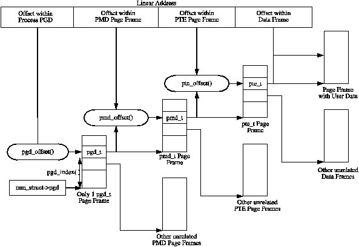
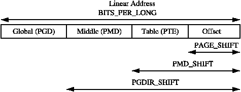
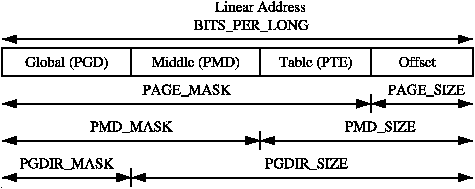
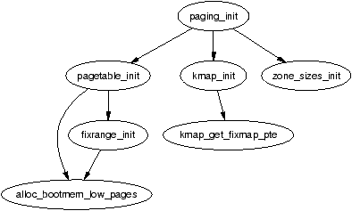

与其它操作系统相比，Linux 划分机器无关层与机器相关层的方式较为特别 [CP99]。其它操作系统通常使用一些专门的对象来管理底层物理页，例如 BSD 中的 pmap 对象。Linux 则不同——即便底层架构并不支持，它也在架构无关代码中保留三级页表的概念。这在概念上易于理解，但同时意味着不同类型页之间的区分非常模糊，页面类型往往不靠其所属对象来识别，而是靠其标志位或所在的链表来区分。
对于使用与三级页表不同方式管理其内存管理单元（Memory Management Unit，MMU）的架构，需要模拟出三级页表。例如，在未启用 PAE 的 x86 上只有两级页表，页中间目录（Page Middle Directory，PMD）被定义为大小为 1，并直接"折叠"回 页全局目录（Page Global Directory，PGD），编译期就会被优化掉。不幸的是，对于不会自动管理其缓存或地址翻译后备缓冲器（Translation Lookaside Buffer，TLB）的架构，需要在代码中显式留出与机器相关的钩子，以便在必要时刷新 TLB 和 CPU 缓存——即便在某些架构（如 x86）上这些钩子是空操作。相关内容将在 3.8 节进一步讨论。
本章将首先介绍页表的组织方式，以及描述三级页表的类型，然后讲解如何将虚拟地址拆分为各级偏移以便遍历页表。随后讨论最底层的表项页表项（Page Table Entry，PTE）及硬件使用的位。之后介绍用于遍历页表、设置和检查属性的宏，接着讨论页表如何填充以及如何为页表分配和释放页。然后讨论初始化阶段：在系统引导过程中如何初始化页表。最后介绍 TLB 与 CPU 缓存的使用。
每个进程通过 mm_struct→pgd 拥有一个指向自己的页全局目录（PGD）的指针。PGD 是一个物理页帧，包含一组架构相关的 pgd_t 类型条目，pgd_t 定义在 <asm/page.h> 中。各架构加载页表的方式不同。在 x86 上，加载进程页表的方式是把 mm_struct→pgd 复制到 cr3 寄存器，这一操作的副作用是刷新 TLB。事实上，架构相关代码中 __flush_tlb() 就是这样实现的。
PGD 中每个有效条目指向一个包含 pmd_t 类型 PMD 条目数组的页帧；每个 PMD 条目又指向包含 pte_t 类型 PTE 的页帧；PTE 最终指向保存实际用户数据的页帧。如果页被换出到后备存储，PTE 中保存的是 swap 表项，缺页时 do_swap_page() 使用它找到保存页数据的 swap 表项。页表布局如图 3.1 所示。

任意一个线性地址都可以拆分为三个页表层级中各自的偏移和页内偏移。为便于拆分，每个页表层级都提供一组三个宏：SHIFT、SIZE 和 MASK。SHIFT 指明每个页表级别所映射的位数，见图 3.2。

MASK 可与线性地址做按位与以屏蔽高位，经常用于判断地址是否在某级页表上对齐。SIZE 表明该级每个表项所映射的字节数。SIZE 与 MASK 的关系如图 3.3 所示。

计算这三组宏时，只有 SHIFT 重要，其它两个都由它推算。例如，x86 上页一级的三组宏为：
5 #define PAGE_SHIFT 12 6 #define PAGE_SIZE (1UL << PAGE_SHIFT) 7 #define PAGE_MASK (~(PAGE_SIZE-1))
PAGE_SHIFT 是线性地址中页内偏移部分的位数，x86 上为 12 位。页大小就是 2PAGE_SHIFT。最后掩码是 PAGE_SIZE-1 所占位的取反。若要把地址向上对齐到页边界，使用 PAGE_ALIGN() 宏：它先把地址加上 PAGE_SIZE-1，再与 PAGE_MASK 做按位与以清零页内偏移位。
PMD_SHIFT 是线性地址中由第二级页表映射的位数。PMD_SIZE 与 PMD_MASK 的计算方式与上面类似。
PGDIR_SHIFT 是顶级（第一级）页表所映射的位数，PGDIR_SIZE 与 PGDIR_MASK 的计算方式同上。
最后三个重要的宏是 PTRS_PER_x，决定页表每一级的表项数：PTRS_PER_PGD 是 PGD 中指针数（无 PAE 的 x86 上为 1024）；PTRS_PER_PMD 是 PMD 中指针数（无 PAE 的 x86 上为 1）；PTRS_PER_PTE 是最低一级表项数（x86 上为 1024）。
如前所述，PTE、PMD 和 PGD 分别由结构体 pte_t、pmd_t 和 pgd_t 描述。虽然这些类型通常就是无符号整数，但把它们定义为结构体有两个原因：一是类型保护，避免被误用；二是为了支持像 x86 PAE 这种需要额外 4 位以寻址超过 4 GiB 内存的特性。另外还定义了 pgprot_t 用于保存保护位，通常存放在页表项的低位。
在 asm/page.h 中提供 4 个类型转换宏，用于从上述类型中取出相应部分：pte_val()、pmd_val()、pgd_val() 和 pgprot_val()。反向转换则有 __pte()、__pmd()、__pgd() 和 __pgprot()。
保护位具体放在何处依架构而定。这里以未启用 PAE 的 x86 为例说明。此时 pte_t 就是一个结构体中的 32 位整数。每个 pte_t 指向一个页帧的地址，且保证页对齐，因此低 PAGE_SHIFT（12）位可用作页表项的状态位。表 3.1 列出了部分保护与状态位，具体位的含义因架构而异。
| 位 | 功能 |
|---|---|
| _PAGE_PRESENT | 页驻留在内存中，未被换出 |
| _PAGE_PROTNONE | 页驻留但不可访问 |
| _PAGE_RW | 置位表示页可写 |
| _PAGE_USER | 置位表示用户空间可访问 |
| _PAGE_DIRTY | 置位表示页被写过 |
| _PAGE_ACCESSED | 置位表示页被访问过 |
这些位含义都很直观，仅 _PAGE_PROTNONE 需进一步说明。在 Pentium III 及以上 x86 上，这一位被称为页属性表（Page Attribute Table，PAT）位；更早的架构如 Pentium II 上这一位是保留位。PAT 位用于指示 PTE 引用的页大小。而在 PGD 表项中，同一位被称为页大小异常（Page Size Exception，PSE）位，显然这两位是配合使用的。
由于 Linux 不在用户页中使用 PSE 位，PTE 中的 PAT 位就可挪作他用。当某段内存需要驻留但禁止用户进程访问时（例如通过 mprotect() 配合 PROT_NONE 保护），就清除 _PAGE_PRESENT 并置位 _PAGE_PROTNONE。pte_present() 宏会检查这两位之一，因此内核仍然知道 PTE 是"存在"的，只是用户空间不可访问——这一点细微但重要。由于硬件位 _PAGE_PRESENT 被清除，访问该页会产生缺页异常，从而让 Linux 实现保护；同时内核仍然清楚该页驻留在内存中，在换出或进程退出时能正确处理。
<asm/pgtable.h> 中定义了用于遍历和检查页表项的宏。对于页目录的遍历，提供了三个宏将线性地址拆解：pgd_offset() 接受一个地址和进程的 mm_struct，返回覆盖该地址的 PGD 表项；pmd_offset() 接受 PGD 表项和地址，返回相应的 PMD；pte_offset() 接受 PMD 和地址，返回相应的 PTE。线性地址其余部分就是页内偏移。它们之间的关系见图 3.1。
第二组宏判断页表项是否存在或可用：
VM 中很多代码会"走"页表，识别这类代码很重要。mm/memory.c 中的 follow_page() 是一个非常简单的例子。下面是其中与走页表相关的片段（无关部分省略）：
407 pgd_t *pgd; 408 pmd_t *pmd; 409 pte_t *ptep, pte; 410 411 pgd = pgd_offset(mm, address); 412 if (pgd_none(*pgd) || pgd_bad(*pgd)) 413 goto out; 414 415 pmd = pmd_offset(pgd, address); 416 if (pmd_none(*pmd) || pmd_bad(*pmd)) 417 goto out; 418 419 ptep = pte_offset(pmd, address); 420 if (!ptep) 421 goto out; 422 423 pte = *ptep;
它就是用三个 offset 宏遍历页表，并用 _none() 与 _bad() 宏确保看到的页表项合法。
第三组宏用于检查和设置表项的权限。权限决定用户进程对该页的访问权——例如，用户进程永远无法读取内核页表项。
第四组宏检查和设置表项状态。Linux 中只关心两位：dirty 和 accessed。检查使用 pte_dirty() 和 pte_young()，置位使用 pte_mkdirty() 和 pte_mkyoung()，清除使用 pte_mkclean() 和 pte_old()。
这一组函数和宏处理地址、页与 PTE 之间的映射以及单个表项的设置。
宏 mk_pte() 接受 struct page 和保护位，组合得到一个可插入页表的 pte_t。类似的宏 mk_pte_phys() 接受物理页地址作为参数。
宏 pte_page() 返回 PTE 对应的 struct page；pmd_page() 返回包含一组 PTE 的 struct page。
宏 set_pte() 接受 mk_pte() 返回的那种 pte_t，将其放入进程页表；pte_clear() 是其逆操作。还有 ptep_get_and_clear()，它从进程页表中清除一项并返回 pte_t。当需要修改 PTE 保护位或 struct page 本身时它非常有用。
这组函数处理页表的分配与释放。页表本身就是包含表项数组的物理页，而物理页的分配与释放成本相对较高——分配过程中要禁中断且耗时较多。然而页表在三级中的任意一级都需要被频繁地分配和释放，因此操作必须尽可能快。
所以页表使用的页被缓存到一系列称为快表（quicklists）的链表中。各架构实现略有差异但原理一致。例如并非所有架构都缓存 PGD，因为 PGD 的分配与释放只在进程创建与退出时发生，相比这两个本来就昂贵的操作，多分配一页可忽略不计。
PGD、PMD 和 PTE 各有一对分配与释放函数，分别是 pgd_alloc()、pmd_alloc()、pte_alloc()，以及 pgd_free()、pmd_free()、pte_free()。
大体而言，这三类缓存分别叫 pgd_quicklist、pmd_quicklist 和 pte_quicklist。不同架构实现方式不同，一种典型做法是 LIFO：通常页表项指向其它页表或数据页；而被缓存时，链表首项用作指向下一个空闲页表的指针。分配时从链表弹出，释放时压入链表，并维护一个使用计数。
从 pgd_quicklist 快速分配的函数没有对外暴露，但 get_pgd_fast() 是常见的命名。PMD 和 PTE 的缓存分配函数则公开声明为 pmd_alloc_one_fast() 与 pte_alloc_one_fast()。
缓存中无可用页时，会走物理页分配器（见第 6 章），三级页表对应的函数分别是 get_pgd_slow()、pmd_alloc_one() 与 pte_alloc_one()。
缓存中可能积累大量页，因此还有修剪机制。缓存大小有高低两条水位，每次增长或缩减都会更新计数。check_pgt_cache() 在两个地方被调用以检查水位：当达到高水位时，从缓存中释放页直至降回低水位。它在 clear_page_tables() 之后（此时可能涉及大量页表）以及系统空闲任务中被调用。
系统刚启动时分页未启用，因为页表不会自动初始化。各架构实现不同，这里只讨论 x86。页表初始化分为两阶段：自举阶段（bootstrap）只建立覆盖 8 MiB 的页表以便启用分页单元；第二阶段初始化其余页表。
位于 arch/i386/kernel/head.S 的汇编函数 startup_32() 负责开启分页单元。虽然 vmlinuz 中的普通内核代码以 PAGE_OFFSET + 1MiB 为基址编译，但内核实际加载到物理 1 MiB（0x00100000）。前 1 MiB 中部分被设备用于与 BIOS 通信，所以跳过。此文件中的自举代码把 1 MiB 当作基址，方法是在分页启用之前从所有地址中减去 __PAGE_OFFSET。因此在分页启用之前，需要先建立一个映射，把 8 MiB 物理内存映射到虚拟地址 PAGE_OFFSET。
初始化以编译期静态定义一个数组 swapper_pg_dir 开始，链接器将其放置在 0x00101000。然后为 pg0 和 pg1 两个页建立页表项。若 CPU 支持页大小扩展（PSE）位则会置位，使转换的页大小为 4 MiB 而非通常的 4 KiB。pg0 和 pg1 的第一组指针覆盖 1–9 MiB；第二组指针位于 PAGE_OFFSET+1MiB。这样在启用分页后，无论使用物理地址还是虚拟地址，内核映像本身都能正确映射。其余内核页表由 paging_init() 初始化。
建立映射后，置位 cr0 寄存器中的相应位以启用分页单元，并立即跳转以确保指令指针（EIP 寄存器）正确。
负责完成页表初始化的函数是 paging_init()，其在 x86 上的调用图见图 3.4。

该函数首先调用 pagetable_init()，初始化引用 ZONE_DMA 和 ZONE_NORMAL 中所有物理内存所需的页表。要注意 ZONE_HIGHMEM 中的高端内存不能直接引用，只能临时映射。对内核使用的每个 pgd_t，启动内存分配器（见第 5 章）会为 PMD 分配一页，若 CPU 支持则置 PSE 位，使用 4 MiB 的 TLB 表项；否则为每个 pmd_t 分配一页用于 PTE。如果 CPU 支持 PGE，也会置位，使页表项成为全局可见、对所有进程可见。
接着，pagetable_init() 调用 fixrange_init()，在虚拟地址空间末尾、从 FIXADDR_START 开始的位置建立固定地址空间映射。这些映射用于诸如本地 APIC 以及 kmap_atomic() 所需的 FIX_KMAP_BEGIN 到 FIX_KMAP_END 之间的原子 kmap。最后再次调用 fixrange_init() 来初始化 kmap() 普通高端内存映射所需的页表项。
pagetable_init() 返回后，内核空间的页表已全部初始化完毕，便将静态 PGD（swapper_pg_dir）加载到 CR3 寄存器，使分页单元开始使用该静态表。
paging_init() 的下一项任务是调用 kmap_init()，把每个 PTE 初始化为 PAGE_KERNEL 保护标志。最后调用 zone_sizes_init() 初始化所有 zone 结构。
Linux 需要一种快速的方式把虚拟地址转为物理地址，以及把 struct page 映射到其物理地址。为此 Linux 利用全局 mem_map 数组——它包含系统所有物理页的 struct page 指针——并知道它在虚拟与物理内存中的位置。各架构机制相似，下面仍以 x86 为例。本节先讲物理地址到内核虚拟地址的映射，再讨论对 mem_map 数组的意义。
如 3.6 节所述，Linux 在 x86 上把物理地址 0 直接映射到虚拟地址 PAGE_OFFSET（3 GiB）。这样任意虚拟地址都可以通过减去 PAGE_OFFSET 得到物理地址，这正是 virt_to_phys() 函数与 __pa() 宏所做的：
/* 来自 <asm-i386/page.h> */
132 #define __pa(x) ((unsigned long)(x)-PAGE_OFFSET)
/* 来自 <asm-i386/io.h> */
76 static inline unsigned long virt_to_phys(volatile void * address)
77 {
78 return __pa(address);
79 }
反过来只需加上 PAGE_OFFSET，由 phys_to_virt() 与 __va() 完成。接下来看它如何帮助将 struct page 映射到物理地址。
如 3.6.1 节所述，内核映像加载在物理 1 MiB 处，即虚拟 PAGE_OFFSET + 0x00100000，并保留约 8 MiB（两个 PGD 可寻址）的虚拟区。这本会意味着可用的首个内存位于 0xC0800000，但实际上 Linux 试图为 ZONE_DMA 保留前 16 MiB，因此内核分配实际使用的第一个虚拟地址是 0xC1000000，全局 mem_map 通常就在这里。ZONE_DMA 仍会使用，但仅在必要时。
把物理地址当作 mem_map 数组的索引即可得到 struct page：将物理地址右移 PAGE_SHIFT 位得到 PFN，也就是 mem_map 的下标。这正是 virt_to_page() 宏（声明于 <asm-i386/page.h>）所做的：
#define virt_to_page(kaddr) (mem_map + (__pa(kaddr) >> PAGE_SHIFT))
它先用 __pa() 把虚拟地址 kaddr 转为物理地址，再右移 PAGE_SHIFT 位转为数组下标，加上 mem_map 即可。没有专门把 struct page 转回物理地址的宏，但此时其推导已显而易见。
最初，CPU 在把虚拟地址映射为物理地址时，必须遍历整张页目录搜索所需的 PTE。这通常意味着每条访问内存的指令都要进行若干次额外的内存引用以走页表 [Tan01]。为减少这一开销，架构利用程序通常表现出的引用局部性，即大量内存引用集中在少量页上。它们提供一种地址翻译后备缓冲器（TLB）——一种小型相联存储——缓存虚拟到物理页的翻译结果。
Linux 假定大多数架构支持某种 TLB，尽管架构无关代码并不关心其具体工作机制。架构相关钩子分散于 VM 代码中，在已知带 TLB 的硬件需要执行 TLB 相关操作的位置插入。例如，缺页处理完成、页表更新后，CPU 可能需要更新该虚拟地址映射的 TLB。
并非所有架构都需要这些操作，但因部分架构需要，钩子必须存在。若某架构不需要某项 TLB 操作，对应函数就是空操作，编译期会被优化掉。
TLB API 钩子大多声明在 <asm/pgtable.h>，列于表 3.2 与表 3.3，内核源代码 Documentation/cachetlb.txt [Mil00] 中有详细说明。原则上可以只用一个 TLB 刷新函数，但因为 TLB 刷新和填充都非常昂贵，应尽量避免不必要的刷新。例如上下文切换时，Linux 通过惰性 TLB 刷新（Lazy TLB Flushing）避免重新装载页表，相关内容详见 4.3 节。
| 函数 | 说明 |
|---|---|
| void flush_tlb_all(void) | 刷新系统所有 CPU 上的整个 TLB，是开销最大的 TLB 刷新操作。完成后所有页表修改对全局可见。当全局性质的内核页表被修改后需要调用，例如 vfree()（见第 7 章）完成后或 PKMap 被刷新后（见第 9 章）。 |
| void flush_tlb_mm(struct mm_struct *mm) | 刷新与给定 mm 上下文用户空间部分（即 PAGE_OFFSET 以下）相关的所有 TLB 项。某些架构（如 MIPS）需要在所有 CPU 上执行，但通常只在本地 CPU 上。仅在影响整个地址空间的操作之后调用，例如 dup_mmap()（fork 时复制地址映射）之后，或 exit_mmap()（删除所有内存映射）之后。 |
| void flush_tlb_range(struct mm_struct *mm, unsigned long start, unsigned long end) | 顾名思义，刷新 mm 上下文中给定用户空间范围内的所有项。在新区域被移动或修改后调用，例如 mremap() 移动区域或 mprotect() 修改权限时。munmap() 通过 tlb_finish_mmu() 间接使用它来高效刷新范围。该 API 为可快速移除一段 TLB 项的架构提供，避免逐页调用 flush_tlb_page()。 |
| 函数 | 说明 |
|---|---|
| void flush_tlb_page(struct vm_area_struct *vma, unsigned long addr) | 从 TLB 中刷新单个页。最常见的两种用法是页面缺页换入后或换出后刷新 TLB。 |
| void flush_tlb_pgtables(struct mm_struct *mm, unsigned long start, unsigned long end) | 当页表被销毁释放时调用。某些平台缓存最低一级页表，即实际保存表项的页帧，在删除这些页时需要刷新。区域被解除映射、页目录项被回收时调用。 |
| void update_mmu_cache(struct vm_area_struct *vma, unsigned long addr, pte_t pte) | 仅在缺页处理完成后调用。它告诉架构相关代码：现在地址 addr 对应一个新的翻译 pte。如何使用此信息因架构而异，例如 Sparc64 用它决定本 CPU 是否需要刷新其数据缓存或向远程 CPU 发送 IPI。 |
Linux 对 CPU Cache 的管理方式与 TLB 类似，本节介绍其使用与管理。CPU Cache 与 TLB 一样利用程序的引用局部性 [Sea00][CS98]：CPU 不会每次访问都从主存取数据，而是在 CPU Cache 中保存少量数据。Cache 通常分两级：L1 和 L2。L2 比 L1 大但慢，Linux 只关心 L1。
CPU Cache 以行（line）为单位组织，每行通常 32 字节，按其大小对齐——即 32 字节的 cache line 在 32 字节边界对齐。Linux 中 line 大小由 L1_CACHE_BYTES 定义，依架构而定。
地址到 cache line 的映射方式因架构而异，但大致分三种：直接映射（direct mapping）、全相联映射（associative mapping）和组相联映射（set associative mapping）。直接映射最简单——每块内存只能对应唯一一个 cache line。全相联映射允许任意内存块映射到任意 line。组相联映射是两者的混合——任意内存块只能映射到某个子集中的任意 line。不管哪种方式，邻近且按 cache 大小对齐的地址通常使用不同的 line。Linux 利用这一点最大化 cache 使用：
CPU 引用的地址不在 cache 中时会产生缓存未命中（cache miss），需要从主存取数据。这代价高昂：cache 访问通常少于 10 ns，而主存访问通常 100–200 ns。基本目标是尽可能多命中、少未命中。
同 TLB 一样，某些架构不自动管理 CPU Cache。钩子放在虚拟到物理映射变化的位置，例如页表更新时。CPU Cache 刷新应当先于 TLB 刷新，因为某些 CPU 在刷 cache 时仍需要虚拟到物理映射存在。需要严格顺序的三种操作见表 3.4。
| 刷整个 mm | 刷范围 | 刷单页 |
|---|---|---|
| flush_cache_mm() | flush_cache_range() | flush_cache_page() |
| 改全部页表 | 改一段页表 | 改单个 PTE |
| flush_tlb_mm() | flush_tlb_range() | flush_tlb_page() |
刷新 cache 的 API 声明在 <asm/pgtable.h>，见表 3.5，与 TLB 刷新 API 很相似。
| 函数 | 说明 |
|---|---|
| void flush_cache_all(void) | 刷新整个 CPU cache 系统，最严厉的刷新。修改全局性质的内核页表时使用。 |
| void flush_cache_mm(struct mm_struct mm) | 刷新与某地址空间相关的所有项。完成后没有 cache line 与 mm 相关。 |
| void flush_cache_range(struct mm_struct *mm, unsigned long start, unsigned long end) | 刷新一段地址范围对应的 line。与 TLB 版本类似，为能高效刷范围而非逐页的架构而设。 |
| void flush_cache_page(struct vm_area_struct *vma, unsigned long vmaddr) | 刷新单页大小的区域。传入 VMA 是因为可经 vma→vm_mm 拿到 mm_struct。此外通过测试 VM_EXEC 标志，架构可知该区域是否可执行——这对指令/数据 cache 分离的架构有意义。VMA 详见第 4 章。 |
这还不算完。为避免虚拟别名问题（virtual aliasing）还需要第二组接口。问题在于某些 CPU 根据虚拟地址选择 line，导致同一物理地址出现在多条 line 上，从而引发一致性问题。带此问题的架构作为权宜之计会确保共享映射只使用某些地址，但也提供了正式 API 来解决，见表 3.6。
| 函数 | 说明 |
|---|---|
| void flush_page_to_ram(unsigned long address) | 已废弃 API，不应再使用，2.6 中会被完全移除。仅为完整性与目前仍在使用而列。新物理页即将被放入进程地址空间时调用，作用是避免映射建立后内核空间的写入对用户空间不可见。 |
| void flush_dcache_page(struct page *page) | 当内核写入或从 page cache 页中复制时调用，因为这些页可能被多个进程映射。 |
| void flush_icache_range(unsigned long address, unsigned long endaddr) | 当内核把数据写入将被执行的地址时调用，例如内核模块加载后。 |
| void flush_icache_user_range(struct vm_area_struct *vma, struct page *page, unsigned long addr, int len) | 与 flush_icache_range() 类似，但作用于用户空间范围。目前仅 ptrace()（调试时）通过 access_process_vm() 访问地址空间时使用。 |
| void flush_icache_page(struct vm_area_struct *vma, struct page *page) | page cache 页即将被映射时调用。是否需要刷 I-Cache 或 D-Cache 由架构根据 VMA 标志决定。 |
2.6 中页表管理的整体机制基本未变，但引入的改动覆盖面较广、实现也较深。
新增 mm/nommu.c，里面包含了对 mmap() 等假设 MMU 存在的函数的替代实现，以支持通常为微控制器、没有 MMU 的架构。这部分工作主要来自 uCLinux 项目（http://www.uclinux.org）。
页表管理最重大的改动是引入了反向映射（Reverse Mapping，rmap）。这里使用 "rmap" 是有意的，它是该缩写的常用形式，不应与 Rik van Riel 维护的 -rmap 分支混淆，后者除反向映射外对原版 VM 还有许多其它修改。
一句话概括：rmap 让我们仅凭一个 struct page 就能定位映射该页的所有 PTE。在 2.4 中，要找到所有映射某共享页（如内存映射的共享库）的 PTE，唯一办法是线性遍历所有进程的所有页表，代价过高。Linux 通过使用 swap cache（见 11.4 节）来规避——这意味着对于很多共享页，Linux 可能不得不换出整个进程，而不顾页面年龄和使用模式。2.6 则让每个 struct page 关联一条 PTE 链，可遍历它从所有引用它的页表中移除该页。这样 LRU 中的页可被聪明地换出，而无需换出整个进程。
读者大概能想到，简单概念背后的实现不无复杂。理解的第一步是 struct page 中的 union pte 字段。这个 union 有两个字段：指向 struct pte_chain 的指针 chain，以及 pte_addr_t 类型的 direct。这是一种优化——只有一个 PTE 映射该页时使用 direct 节省内存，否则使用 chain。pte_addr_t 因架构而异，但无论什么类型，都可用来定位一个 PTE，下面简单视为 pte_t。
struct pte_chain 稍复杂。结构本身简单，但紧凑：字段被复用，开发者在缩小尺寸、提高效率方面下了功夫。所幸还可读懂。
首先 struct pte_chain 由 slab 分配器分配和管理——这正是 slab 擅长的。每个 struct pte_chain 最多可容纳 NRPTE 个 PTE 指针；用满后再分配新的并加入链。
struct pte_chain 有两个字段。第一个 unsigned long next_and_idx 有双重用途：与 NRPTE 做按位与，得到当前 pte_chain 中的 PTE 数量、指出下一个空槽；与 ~NRPTE 做按位与，得到链中下一个 pte_chain 的指针1。这就是 PTE 链的基本实现。
下面简单举例感受 rmap 的细节。当一个新 PTE 需要映射某页时，基本流程是：调用方先用 pte_chain_alloc() 分配一个 pte_chain，然后把它连同 struct page 与 PTE 传给 page_add_rmap()。若该页已关联的 PTE 链中还有空槽，就使用之，并将刚才分配的 pte_chain 返回给调用方；若没有空槽，就把分配的 pte_chain 接到链中并返回 NULL。
rmap 还有相当庞大的 API，用于创建链、增删 PTE 等，完整列举超出本节范围。这部分代码集中在 mm/rmap.c 且注释充足，意图较明确。
反向映射带来两大好处，都与换页相关。其一是页表的建立与撤销：如 11.4 节所述，被换出的页放入 swap cache，PTE 中写入再次定位它所需的信息，导致页被放入 swap cache 后又被进程访问而频发轻量缺页。rmap 让 PTE 的建立与移除变成原子操作。其二是换页时，找到引用某页的所有 PTE 成了简单操作；2.4 中这并不实际可行，所以才有了 swap cache。
反向映射并非没有代价：首先是 PTE 链的额外空间需求；其次有 CPU 开销，但其影响尚未被证明显著。值得注意的是，只有当换页频繁时反向映射才划算；若负载下换页不多或内存充足，反向映射就是纯开销少益处。撰文时关于 rmap 的利弊讨论仍在进行。
每页的反向映射可能需要相当大的空间。雪上加霜的是，一个 VMA 内众多被反向映射的页本质上是相同的。一种思路是按 VMA 而非按页做反向映射——即每页不再单独记录反向映射，而是遍历映射该页的所有 VMA 并将其各自解除映射。注意这里的 object 指 VMA，不是面向对象意义上的 object2。撰文时该特性尚未合并，最后一次出现在 2.5.68-mm1，但只要其问题能解决，加入它的动力很强。极感兴趣的读者可参考此版本仅对文件/设备型 objrmap 的 patch3。
有两种任务需要遍历映射某页的所有 PTE。第一个是 page_referenced()，检查所有映射该页的 PTE 看看最近是否被引用。第二个是 try_to_unmap() 把页从所有进程中解除映射。更复杂的是要反向映射的有两类：文件/设备后备的与匿名的。两者基本目标都是遍历所有映射该页的 VMA，再走该 VMA 的页表得到 PTE，区别只在于实现方式。文件后备的情况最简单也最先实现，先讲它。下面以 page_referenced() 的实现为例。
page_referenced() 调用 page_referenced_obj()，这是查找映射该页的 VMA 内所有 PTE 的顶层函数。由于页是文件或设备后备的，page→mapping 指向有效的 address_space。address_space 通过 i_mmap 和 i_mmap_shared 两条链表保存所有使用该映射的 VMA。对每个 VMA，调用 page_referenced_obj_one()，传入 VMA 与 page。page_referenced_obj_one() 先检查该页是否在该 VMA 所管理的地址中，若是则使用该 VMA（vma→vm_mm）走页表直到找到对应该 mm_struct 中映射该页的 PTE。
匿名页跟踪要复杂得多，分阶段实现。它只短暂出现，又在 2.5.65-mm4 被移除，因为与其它一些改动冲突。第一阶段是用 page→mapping 与 page→index 跟踪 mm_struct 与地址对。此前这两个字段用来存指向 swapper_space 的指针与 swp_entry_t（见第 11 章）。具体如何处理超出本节范围，简而言之 swp_entry_t 改存于 page→private。
try_to_unmap_obj() 类似工作，但所有引用该页的 PTE 都不再需要对单页做反向映射。该方案有个严重的搜索复杂度问题阻碍其合并：设 100 个进程各有 100 个 VMA 映射同一文件，按对象反向映射卸载单一页需要搜索 10,000 个 VMA，绝大多数是多余的；按页反向映射只需考察 100 个 pte_chain 槽——每个进程一个。引入了按虚拟地址在 address_space 内排序 VMA 的优化，但卸载单页的搜索代价仍过高，objrmap 因此尚未合并。
2.4 中 PTE 位于 ZONE_NORMAL，因为内核在走页表时需要直接寻址它们。在高端内存机器上这变得不可接受——三级 PTE 大量占用 ZONE_NORMAL。明显的对策就是把 PTE 放到高端内存，这正是 2.6 所做。
如第 9 章所述，访问高端内存中的信息并非免费，因此把 PTE 放入高端内存是一个编译期选项。问题在于内核必须先把高端页映射到低端地址空间才能使用，而可用的映射槽位非常有限，形成瓶颈。然而对 PTE 量大的应用，这几乎是唯一选择。撰文时有人提议引入用户内核虚拟区域（UKVA）——一个对每个进程私有的内核空间区域，但能否在 2.6 中合并尚不确定。
为支持高端内存映射，2.4 的 pte_offset() 宏在 2.6 中被替换为 pte_offset_map()。若 PTE 在低端内存，行为同 pte_offset()，返回 PTE 地址；若在高端内存，先用 kmap_atomic() 映射到低端供内核使用。使用完毕应尽快用 pte_unmap() 解除映射。
这意味着走页表的代码会有所不同。找到给定地址的 PTE 现在大致为（取自 mm/memory.c）：
640 ptep = pte_offset_map(pmd, address); 641 if (!ptep) 642 goto out; 643 644 pte = *ptep; 645 pte_unmap(ptep);
PTE 分配 API 也变了：原来的 pte_alloc() 替换为两个函数——用于内核 PTE 映射的 pte_alloc_kernel() 与用于用户空间映射的 pte_alloc_map()。主要差别是 pte_alloc_kernel() 不会使用高端内存作 PTE。
就内存管理而言，从高端内存映射 PTE 的开销不容忽视。每 CPU 同时只能映射一个 PTE，第二个可用 pte_offset_map_nested()。当需要遍历全部 PTE 时（如 zap_page_range() 解除给定范围内所有 PTE），代价不小。
撰文时已有补丁用基本相同的机制把 PMD 也放到高端内存，预计会被合并。
多数现代架构支持多种页大小。例如许多 x86 架构可使用 4 KiB 或 4 MiB 页。传统上 Linux 只在映射内核映像时使用大页，其它地方一律不用。TLB 槽稀缺，所以在大内存机器上能利用大页很有意义。
2.6 允许进程使用"大页（huge pages）"，大小由 HPAGE_SIZE 决定。系统管理员通过 /proc/sys/vm/nr_hugepages（最终调用 set_hugetlb_mem_size()）设置可用的大页数量。能否成功依赖物理连续内存是否充足，所以应在系统启动期间分配。
实现的核心是大页 TLB 文件系统（hugetlbfs），是一个在 fs/hugetlbfs/inode.c 中实现的伪文件系统。该文件系统中每个文件由一个大页支撑。初始化时 init_hugetlbfs_fs() 注册该文件系统并通过 kern_mount() 挂为内部文件系统。
进程访问大页有两种方式：一是用 shmget() 建立由大页支撑的共享区域；二是对在大页文件系统中打开的文件调用 mmap()。
用大页支撑共享内存区域时，进程应在 shmget() 中以 SHM_HUGETLB 作为标志之一。这会调用 hugetlb_zero_setup() 在内部 hugetlb 文件系统根目录下创建一个文件，文件名由原子计数器 hugetlbfs_counter 决定，每次新建共享区域时递增。
若要创建由大页支撑的文件，先由系统管理员挂载 hugetlbfs 文件系统（操作详见 Documentation/vm/hugetlbpage.txt）。挂载后即可用 open() 创建文件。对该文件调用 mmap() 时，file_operations 结构 hugetlbfs_file_operations 会调用 hugetlbfs_file_mmap() 正确建立区域。
大页拥有自己专属的页表管理、地址空间操作与文件系统操作函数，其名称与"普通"页等价物相似，可在 <linux/hugetlb.h> 看到；其实现就在普通页对应函数附近，易于查找。
此处改动很少：API flush_page_to_ram() 被完全移除，新增 flush_dcache_range()。